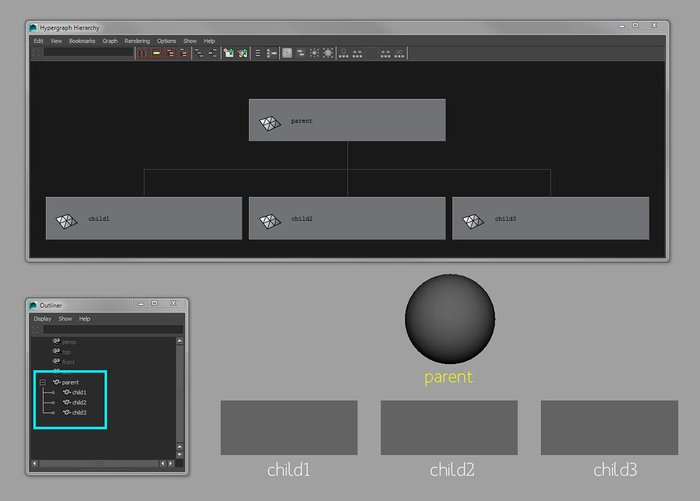
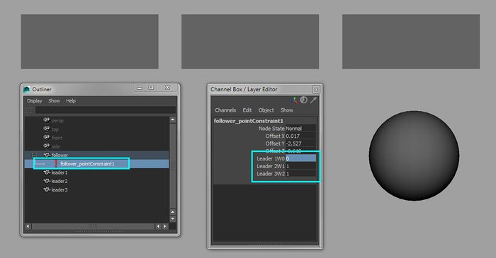
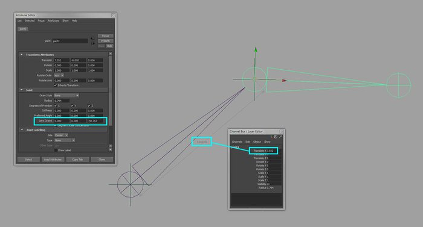
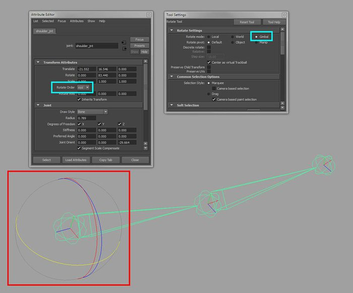
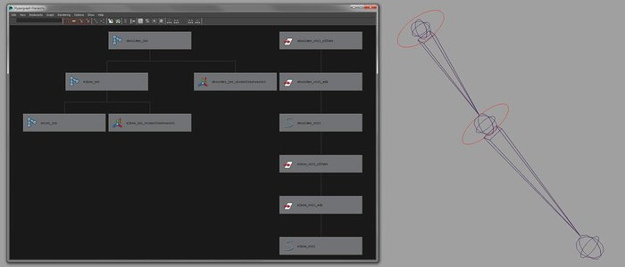

The mesh we will be rigging
In this series of tutorials, we will delve into the depths of rigging in computer graphics. This will be an introductory series focused on using Maya but the concepts can be easily applied to other packages. Over the coming weeks, we will be taking the male mesh that we created previously and building a rig for it that allows an animator to manipulate it. Before we start building the actual rig, however, let's first clarify what the role of the rigger is and get accustomed to some of the principal tools used during this process and also some common practices to create clean rigs that won't drive animator's nuts.
Rigging is what makes deforming a character possible. It's the process of taking a static mesh, creating an internal digital skeleton, creating a relationship between the mesh and the skeleton (known as skinning, enveloping or binding) and adding a set of controls that the animator can use to push and pull the character around as if he/she is a puppeteer. In layman's terms, rigging is the process of adding the digital strings to the puppet. The rigger is the Geppetto of our times.
As the role of the rigger primarily sits between the modeler and the animator, it's important that the rigger has a good understanding of both what the modeler is delivering to them and what the animator requires. Therefore the rigger needs to understand the importance of good edge flow so he/she can predict how the mesh will deform. The rigger needs to understand the principles of animation and the techniques an animator may employ to create the intended performance. On top of all of this, he needs thorough knowledge of anatomy, animal anatomy and kinesiology. And that's just for character work. There is also mechanical rigging that covers cars, planes, trains and so on. The list goes on. Hopefully, I am making it clear that the role of the rigger is pretty darn important. A model will only be a model until it touches the hands of a rigger and an animator can only create an amazing piece of movement or convey a heartfelt emotion through the use of a solid, reliable rig
However, before attempting to replicate reality in CG, you would be very wise to take a long hard look at that reality first. If you are creating a human character, for instance, study the skeleton, the muscles and joint articulation. As another example, if you are looking to rig a car, find out how a car moves. In both cases, examples are all around you, so observe them, and where legal, touch them: feel their movement. The importance of basing 3D work on real world examples (where possible) will be a theme we will frequently return to.
The plan in this first tutorial is to cover the basic tools in Maya. We'll look at creating relationships through parent/child setups and Constraints. We'll cover joints: what makes them special and how to create and edit them. We'll look at Rotation Order and Gimbal Lock, before finally looking at how to create clean animation controls.
When it comes to rigging, understanding relationships is fundamental. If you break a rig down, what you will have is a series of relationships and connections, almost like a family tree. But in this family tree, it's important that your uncle gets on with your kleptomaniac cousin and your mother-in-law is pals with your narcoleptic niece. If this is not the case, you are sure to have a rig that will look fine on the surface but may start to fall apart later on.
In Maya, the most basic relationship you can create is a parent-child relationship. Let's do this now. First create a sphere and a cube and then rename the sphere ‘parent' and the cube ‘child'. Open up the Outliner (Window > Outliner) so we can view the results of the parenting. Now move the objects apart so they do not sit on top of each other. The procedure of parenting is to first select the child object, shift-select the parent object and then go Edit > Parent or hit P on the keyboard. In the Outliner, you should have noticed that the child object now lives beneath the parent object. If you translate the parent object, the child will follow. The same goes for rotations and scaling. In the Channel Box, zero out the translate and rotate values for the child object. In doing so, the child object should snap to the same location as the parent object. This is because the parent object is the child new world center. If you zero out the translate and rotate values for the parent object, the parent object will snap back to the Maya world center. This is because this object is a child of the Maya world, in a manner of speaking. The benefits of simple parent-child relationships are that the child object still has freedom to move around unlike using a Parent Constraint, which we will come to later.
So far, we have parented one object under another. Create a few more objects and parent them one under the other so you have the start of a small hierarchy. You'll notice that the object at the top of the hierarchy will affect all objects and the next object will affect the objects below it and so on. It's like your great-granny tells your granny what to do, your granny tells your mama what to do and your mama tells you what to do. But then you grow up and want to stop holding your mama's hand. To bring an object out of a hierarchy, we can simply unparent it by selecting it and going Edit > Unparent or Shift+P.
A simple parent-child relationship
With parenting, you are taking an object or a node and directly popping it under another. Constraints on the other hand, allow you to build relationships without changing the hierarchical structure of the objects. Further to this, where parenting affects all the transformation channels in one hit, constraints allow you to break the relationships down into smaller chunks. For example, you can Point Constrain one object to another so only the translation of an object is affected. When an object is constrained, you cannot manipulate the channels that are constrained as you can a parent-child relationship. The object constrained will simply snap back to the leading object. You can, however, set keys on the constrained object and in doing so, a pairBlend node will be created allowing you to choose if the keyframes or the constraint itself should be active. I've never been a fan of using pairBlend nodes as they tend to drive me nuts. If I need an object to be controlled by multiple inputs, I will simply add more constraints to the object and that is, in my eyes, what makes constraints so much more beneficial than simple parenting: you can have one object constrained to many leading objects and use weighting to determine who is in charge. Let's try this now.
In a new Maya scene, create a sphere and a cube and translate them away from each other. Rename the sphere ‘leader' and the cube ‘follower'. With parenting, we select the child object, then the parent and then perform the command. With constraints, it's the opposite. First we select the object that will be in charge, then the object that will be affected and then perform the command. So, select the ‘leader' object first, shift-select the ‘follower' object and in the Animation menu set, go Constrain > Point (Options). Make sure Maintain Offset is unchecked, leave all the other settings in their default state and hit Apply. The ‘follower' object should snap to the same position as the ‘leader' object. You'll also notice that in the Channel Box the translate channels are highlighted in blue. This indicates that a constraint is active here. Have a look in the Outliner and you will see that the hierarchy has not been altered for the objects and a pointConstraint1 node lives under the ‘follower' object. We'll leave constraints here for now as we will be coming back to them many times later but do have an experiment with the other types of constraints to get a feel for how they could be useful.
Using a point constraint to drive the position of the sphere
Okay, so now we come to the nuts and bolts of rigging in Maya: joints. Like all other objects in Maya, joints are a transform node; they can be translated, rotated and scaled. But joints are unique and what makes them unique is the fact that they, and only they, have orientation. Known as the jointOrient, this allows a joint to orient along an axis. You'll notice this when you have a chain of joints: each parent joint will be orientated to aim at its child joint. Let's put this to the test now and also cover the creation and editing of joints
In a new Maya scene, go Skeleton > Joint Tool. Now, in the Front or Side view, use the left-mouse button to create a few joints. When you have created a chain of joints, hit Enter on the Keyboard to exit the tool. You can also exit the tool with the right-mouse button but this will create a final joint where the cursor was in the viewport. Open up the Outliner and you'll see that the hierarchy of our joint chain is that of a parent-child relationship. Rotate the root joint and the rest of the chain will follow. This is also known as Forward Kinematics movement: rotational movement that works from the root down to the tip. Now set the Rotate tool to Local under the Rotate Tool Settings and select the first joint in the chain. You should notice that the joint is orientated towards the child joint and the rotate channels all have zero values in them. Pop over to the Attribute Editor and under the Joint tab you will find the jointOrient. Here you can see how the joint uses the orientation to aim at the child joint rather than have values set in the rotate channels. Activate the Translate tool, set the mode to Object and you should also notice that the joint aims at the child joint along the X-axis. This is known as the Aim Axis. The translate X value of the child joint also gives us the length of the parent joint. This is very useful for adding extra features to your rig such as squash and stretch.
Now we shall place the joints or orient them into the correct place within the mesh. I am pretty passionate about this point: if there is one thing that I feel is uber-important when rigging, it is the clean placement of joints. As the joints are, very simply, pivot points, the placement of them will dictate how the character articulates. Bad placement equals bad deformation. So here are some of the guidelines that I follow when creating joints. Firstly, only the root joint in a chain can have translate values in X, Y and Z. All children joints can only have a value in translate X (giving us the length of the joint) and all Rotation values for every joint must be at 0. When we actually come to creating the rig, we'll use some of Maya's default tools as well as a few scripts to aid us in the speedy creation of joint chains, my favorite being Michael Comet's Mel Script Suite.
Two of the most important features of joints, the jointOrient and the translate X (the length of the joint)
Rotation Order refers to the order of operation in which the orientation of the selected object will be evaluated in. Let's pick this apart in Maya. In a new scene, create a 3-joint chain that mimics an arm in the front view. Label the joints from root to tip: ‘shoulder_jnt', ‘elbow_jnt' and ‘wrist_jnt'. The '_jnt' will be the suffix we will add to all the joints. Select the shoulder and in the Attribute Editor you will find the Rotate Order set to XYZ under the Transform Attributes tab. What this means is that the Z axis will carry both the Y and X axes. The Y axis will carry the X axis and the X axis will not carry any other axis. If you read it from right to left, it makes more sense, I find.
Now if you have your rotate mode set to Local, you may think that this is not the case as you rotate the shoulder around. So set the rotate channels to 0 for the shoulder and set Rotate mode to Gimbal. Rotate the arm now and you will be shown the true representation of what the axes are actually doing. Rotate the Y channel 90-degrees and very quickly, you now have 2 axes sitting one on top of the other: the X over the Z axis. You have now hit Gimbal Lock, my friend: 2 axes giving a similar rotational movement. This is not a good state to be in but one that is unfortunately unavoidable in some situations. So, how do we combat this? Well, quite simply, we need to figure out which rotational axes are the most important for that part of the rig and then edit the Rotate Order to support this. As long as we test the rig as we create it and open up the communication lines with the animator to find out how they intend to animate the character, we can put provisions in place to make their life easier.
Changing the Rotate mode to Gimbal. allowing us to view the true representation of the axes
Lastly, we will look at creating animation controls. This will bring everything that we've covered so far together: parenting, hierarchies, constraints, clean placement and rotation order will all be at play here. You may be thinking, why not just animate the joints? This is fine with very simple rigs but there is only so much you can do with a purely joint-based setup. Plus animators are a wild bunch who are fond of deleting things they should not, and recreating a deleted joint will keep you up longer than recreating a deleted control (on most occasions).
The most common object for animation controls is a curve. This could be a custom-designed curve using the CV Curve Tool or simply a NURBS Primitive > Circle. Curves are non-renderable and you can very quickly edit the shape by going into component mode. For every control, I like to create a small hierarchy using group (transform) nodes. This allows me to place and orient the control in the same exact location as the joint it will control, which is very important. It allows for secondary levels of control, and also it allows the animator to return the control back to the default state by zeroing out the translate and the rotate channels. So let's try this out now on a simple 3-joint chain.
Like we did previously, create a 3-joint chain that mimics an arm and rename the joints as before. For now, we will create controls for the first 2 joints in the chain. First go Create > NURBS Primitive and disable Interactive Creation so any objects we create will be drawn in the center of the World space. Now go Create > NURBS Primitive > Circle and rename it ‘shoulder_ctrl'. The suffix for all the controls will be '_ctrl'. With the control still in the World center, go Edit > Group or hit Ctrl+G twice to create 2 group nodes to live above the control. Rename the top-most group ‘shoulder_ctrl_offset' and the group below ‘shoulder_ctrl_auto'. The ‘offset' node will be used to position the control cleanly and the ‘auto' node will be used for adding any extra features through Set Driven Keys or expressions.
To position the control, I use one of the 2 following methods. Both will get you to the same end goal so pick either method that suits you. Method number 1: select the ‘shoulder_ctrl_offset' node, shift-select the ‘shoulder_jnt' (the joint it will control) and hit P on the keyboard. This will parent the ‘_offset' node under the joint. Now zero out the translate and the rotate values for the ‘_offset' node so the entire control hierarchy snaps to the same position as the joint. You will also notice that the orientations line up. Now simply select the ‘_offset' and hit Shift+P to unparent it from the joint. As a result, there should be some transform values back on the ‘_offset' node. These are the co-ordinates of where this node is in World space. We need to leave these as they are. Select the ‘_auto' or the ‘_ctrl' and you will see that they both have 0 values for all the rotation and the translate channels, plus the orientations still line up to the joint. This is what we want.
Let's use method number 2 on the ‘elbow_jnt'. Create another control and create the group levels as we did for the shoulder control and re-name them from top to bottom: ‘elbow_ctrl_offset', ‘elbow_ctrl_auto' and ‘elbow_ctrl'. Next, select ‘elbow_jnt', shift-select ‘elbow_ctrl_offset' and go Constraints > Parent (Options). Disable Maintain offset and hit Apply. The entire control hierarchy should snap into place. Now simply delete the parentConstraint node that lives below the ‘_offset' node in the Outliner and again, you have a control in place.
Later on, we'll create a small script to automate the process of creating and positioning controls, as creating each control manually can be a very laborious process.
The next thing we need to do is have these controls drive the joint structure. We will do this with constraints. Select ‘shoulder_ctrl', shift-select ‘shoulder_jnt' and go Constrain > Orient (Options). Make sure Maintain Offset is disabled and hit Apply. Repeat the same step for the elbow. If you rotate the controls, you will notice that they do indeed drive the joints but there are some weird things happening. The reason for this is that currently, the joint chain is a Forward Kinematics setup while the control rig we have in place is not; the controls are independent from each other and share no relationship. To correct this, simply parent ‘elbow_ctrl_offset' under ‘shoulder_ctrl'. This will create a Forward Kinematics relationship similar to that of our joint chain and voila, we have our control rig complete.
Next time, we will look at the spine. Happy rigging.
Using animation controls to drive the joints through constraints